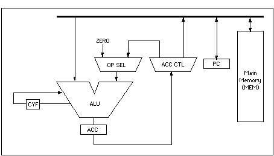
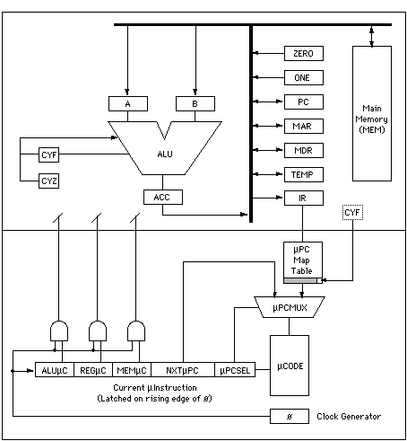
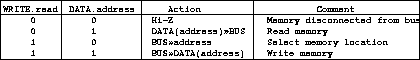
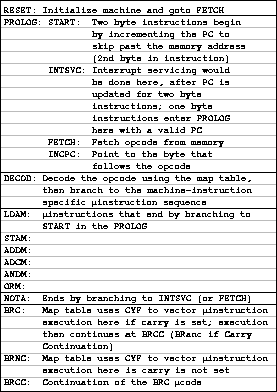
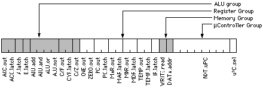
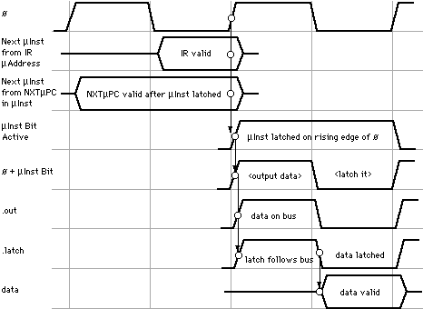

CISC 360: Computer Architecture - Project 1
In this project, we will design a computer simulator based on the Gemini Microprocessor. The Gemini microprocessor is intentionally designed to have as few performance enhancements as possible and have limited capabilities (Note that this "Gemini" has no relation to Sun's Chip with the Ultra-SPARC). The Gemini documentation covers these topics:
- Instruction set architecture (programmer's model)
- System architecture (microprogrammer's model)
- Datapath (ALU, registers, and memory) and controller (microprogram, microaddress select, and control signals)
- Timing diagrams for latches and memory
Your assignment is to simulate Gemini. This will give you a working knowledge of a general Computer Architecture using tools that you are already very familiar with- at the same time, you get to polish your programming skills! Your first goal is to understand the following Gemini Documentation
Gemini Documentation
Programmer's Model
Gemini is an accumulator-based processor with a single bus connecting the ALU, the accumulator (ACC) and program counter (PC) registers, and main memory. The bus is used for both address and data. The accumulator is the target of the load, arithmetic and logic operations. It is the source for the store operation. It is not affected by branching. A constant ZERO is used by the load instruction, which places the value from memory into the accumulator by adding ZERO plus the value into the accumulator. ZERO is otherwise inaccessible to the programmer. To clear the accumulator to zero, if desired, the programmer must load the value zero from memory. From the programmer's view, Gemini instructions use a demultiplexer and a multiplexer to control the target of the accumulator, and to select the operand for the machine instruction (ZERO for load, the accumulator for arithmetic and logic). Instruction Set
For this Project, Gemini has 12 instructions: (Note that $val indicates a memory location #$val indicates an actual value from the text segment) - LDA $m Load the accumulator from a memory location LDA #$val Load the value into the accumulator - STA $m Store the accumulator into a memory location - ADD $m Add the value in memory to the accumulator ADD #$val Add the value to the accumulator - SUB $m Subtract the value in memory to the accumulator SUB #$val Subtract the value to the accumulator - AND $m Logical "and" of memory and accumulator AND #$val Logical "and" of value and accumulator - OR $m Logical "or" of memory and accumulator OR #$val Logical "or" or value and the accumulator - NOTA Logical "not" of accumulator - BA lbl Always branch to label (goto) - BE lbl Branch to label if operation resulted in 0 - BL lbl Branch to label if operation resulted in Negative - BG lbl Branch to label if operation resulted in Positive - NOP No Operation (Implemented by adding Zero to the ACC) The instructions have two formats: - two bytes (LDA, STA, ADD, SUB, AND, OR, B*, NOP) - one byte (NOTA) The reserved field in the first byte of the instruction would typically be used to extend the Gemini architecture with more instructions and/or addressing modes. The temptation of an architect to use these bits for unsupported instructions, and the ingenuity of users who hunted for and used the unsupported instructions, was the bane of early architects, who would drop the unsupported instructions only to have the users complain bitterly.Addressing Modes
Gemini has a single direct-addressing memory mode. Other addressing modes can be constructed by modifying the program in memory. This is known as self-modifying code, and was the only way to construct many programming constructs in the early days of computer architecture that we now take for granted. Other addressing modes can be encoded in the reserved field, and implemented in the microcode.Memory
Gemini has an eight-bit memory address field. Thus all code and data must fit into a 256 byte main memory.
Microprogrammer's Model
At the microprogrammer's level the programmer's model changes to a multiple register machine with the functions of the multiplexer and demultiplexer handled by outputing data onto the single bus, and latching it into a target register. The microcontroller and its connection to the ALU, registers, and memory are visible. The architect must write the microcode that will cause the eight machine instructions to function correctly. As we will see, the Gemini instruction set can be changed by revising or adding to the microprogram. Datapath
The Gemini datapath necessarily includes the ALU, registers, and memory because all share a common bus. Performance improvements start by separating the functions common to the bus to parallelize the operation of the processor. (This is why the MAR and MDR are included in the internal registers, even though they are not needed in this most primitive model.) For example, selecting a location in memory and reading or writing memory data could be done in parallel during a single clock cycle if: - the common bus was split into an internal CPU bus and an external memory bus, - the external memory bus was in turn split into an address bus and a data bus, and - the MAR was connected to the address bus, and the MDR to the data bus Some additional control, basically some multiplexers and select signals, would be needed to specifiy the direction of data transfer on the memory data bus, but the increase in performance because of parallel operation is worth the cost in complexity and floorspace.ALU
The ALU performs four arithmetic and logic operations: - add - sub - and - or - not The instruction set and all "support" operations, such as incrementing the PC, are constructed from these four operations by choosing the source of the ALU inputs and the destination of the accumulator (ACC) output. Some supporting operations, such as the use of the memory address register to select a location in memory, do not involve the ALU.Registers
Gemini has 11 internal registers that are implemented as latches, three in the ALU group (A, B, and ACC) and seven in the register group (ZERO, ONE, PC, MAR, MDR, TEMP, CC, and IR). Their intended purpose is listed below: - A: ALU input, target of ACC, TEMP, MAR, MDR, and PC - B: ALU input, target of ZERO or ONE - ACC: ALU output - ZERO:constant zero, used for LDA instruction - ONE: constant one, used to increment PC and MAR - PC: program counter - MAR: memory address register - MDR: memory data register - TEMP:temporary ACC storage while updating PC and MAR - IR: instruction register, the source of the starting address for each machine instruction's microprogram - CC: Condition Code Register (-1 for Negative, 0 for Zero, 1 for Positive) Each register is "addressed" directly by output (.out) and latch enable (.latch) control bits in the current microinstruction. Some registers' outputs are always enabled, such as the A and B ALU inputs, and the instruction register (IR). In these cases there is no output control bit in the microinstruction. As mentioned previously, the unoptimized version of Gemini does not need the MAR and MDR. They are included for future use (hint, hint :-)Memory
The 256 byte main memory has internal address and data latches, and address decoding. Since we are not designing the memory, we will assume an interface protocol that uses the memory address register (MAR) to select the memory location, WRITE/not_read and DATA/not_address signals to activate the selected location, and the memory data register to either provide the data for a store or receive the data during a load. The operation of the memory interface is summarized in the following table: 
Microprogrammed Controller
Microcode
The microcode lies at the heart of the microprogrammed controller. Control signals for each microinstruction are generated using the clock, ø, either for the level-triggered latches in the datapath, or the edge-triggered latch in the microcontroller that holds the currently executing microinstruction. The microcode (also known as the microprogram) is a 33-bit wide array of 256 microinstructions. It is not at all unusual to have a microinstruction width that is not a power of two because there is no guarantee that the number of control signals will be a power of two, and because floorspace on the CPU is so limited that it would be foolish to implement unused bits. The organization of Gemini and other typical microprograms is given in the table below. Is START the beginning or the end of a instruction sequence? Is the glass half empty or half full? :-) Microinstruction Format
The microinstruction is composed of four groups of control signals: - ALU group - Register group - Memory group - Controller group The signals in each group cause a latch to put data onto a bus (.out), capture data from the bus (.latch), select a function or control a multiplexer, or choose the next microinstruction to execute. Most control signals are inactive during microinstruction execution, that is, most bits in the microprogram are zeros. Active signals are conditioned by the clock, ø, to produce the output and latch signals.  The format of the Gemini microinstruction is called "horizontal microcode" because all control signals are represented by a bit in the microinstruction. "Vertical microcode" decodes all control signals from a microinstruction (useful if many microinstructions are repeated in machine instructions). "Diagonal microcode" encodes some fields in the microinstruction but not others, a compromise between space and time. In the Gemini microinstruction the ALU functions could be encoded as a pair of bits. A microinstruction specifies a limited form of parallelism. As many events can occur in parallel as there are functional units and buses to process and transmit data without conflict. A good microprogrammer searches for ways to reorganize the machine instruction's microcode so as to extract as much parallelism as possible from the microprogrammer's model. Experience in microprogramming can identify the bottlenecks in instruction execution that can be overcome by hardware. Pipelining is the easiest of these to see. It is possible to output data from two sources simultaneously, but because some of the same data bits will be zero and one, damaging short circuits will almost certainly occur. Sending data to two destinations at the same time is permissible if the source of the data is powerful enough (i.e., its "fan-out" is large enough).
Timing: Where Microcode Meets Hardware
The timing diagram below shows the relationship between the clock, ø, and the signals that feedback to control the microcontroller, or that are sent from the microcontroller to control the datapath. Clock Generator
The system clock provides the "heartbeat" of the microcontroller. The clock speed is determined by the time required for data to flow through the longest path in the CPU, or by the time required to execute the the most time-consuming ALU operation. This kind of design is called "synchronous" because all functions are governed by a central clock. Many instructions are slowed down because the clock cycle is the maximum necessary in the worst case. Another type of design called "asynchronous" permits the CPU to operate as fast as possible for each operation. Asynchronous operation is similar to dataflow processing, but like it, adds complexity to the CPU.Generating the Next MicroPC
First we will examine the operation of the microcontroller. The most significant function it performs is selecting the start of a sequence of microinstructions that implement the function of a machine instruction, then sequencing through the microinstructions until the machine instruction is complete.Instruction Register (IR)
The instruction register (IR) is the source of the starting address for a sequence of microinstructions. However, since there are only three bits in the machine instruction's opcode to specify the address, it is necessary to translate the 1-of-8 opcodes to one of the 256 code addresses.MicroPC Map Table
The microPC map table translates the opcode in the IR to a instruction address. Note on the timing diagram that the IR, whose output is always enabled, is translated as soon as the data is followed by the latch, but is only guaranteed to be valid after the data is latched. This is still more than enough time for the next microinstruction to be enabled out of the code, and be present at the current inst latch when the rising edge of the clock, ø, signals the end of the executing microinstruction by latching the next one.Action of Carry Flag
The BRC machine instruction uses the technique of "bit forcing" or "bit jamming" to select between one of two instruction addresses depending on the state of the carry. This is accomplished by wiring the carry into the least significant bit of the microPC map table, but ONLY for the entry that translates the BRC opcode into the BRC microinstruction address. Thus, when the carry is zero the first of two adjacent microinstructions is executed. When the carry is one, the second of the two adjacent microinstructions is executed. Since every microinstruction includes the address of the next instruction to be executed, it is easy for the microprogrammer to vector one of the microinstructions to the appropriate sequence to cause the machine program to branch or to fall through to the next instruction.Selecting the Next Address from the Instruction
As just mentioned, each microinstruction contains the address of the next microinstruction to execute. This is equivalent to having a counter register hardwired into the microcontroller. While it is space-inefficient, this is also a very fast technique. Where the program space is small, as it is in a microprogram, and speed is necessary, this is a good design choice. Larger code and more complex sequencing in code may require a microPC implemented as a register, with its own set of controller status flags.Current Microinstruction Latch
The current instruction is held in an edge-triggered latch so that all control bits are stable throughout the clock cycle. This is necessary so that the next microinstruction address will be valid when the clock rises at the end of the cycle, latching the next microinstruction (see the timing diagram shown earlier).Generating Control Signals
Most control signals are "and"ed with the clock, ø, to produce output/follow and latch signals (see the timing diagram). Some signals are unconditioned, such as the PC.sel, which is thus given as much time as possible to "steer" the correct microinstruction address into the microcode ROM.ALU Timing
The ALU is one of the critical paths in Gemini, determining the maximum clock rate by the sum of the time needed to output and latch the second input (usually to the B register), compute the function of the B register and the previously latched A register, and latch the output in the accumulator. If the ALU operates too slowly, then a single operation that performs all these actions can be split into two, and the clock rate increased, perhaps even doubled. Since there are many more data transfer operations than ALU operations, the overall result is a much faster CPU.Register and Memory Timing
External memory is up to ten times slower than internal memory, largely due to the resistance and capacitance of the I/O pads on a VLSI circuit. The Gemini architecture, as used in this assignment, ignores differences in register and memory timing, assuming that both are not only connected to the same bus, but are also on the same chip.
Assignment
Now that you understand the basic elements of the Gemini, here is the software specifications for this project:Functionality
- The software will take a file name of a file that contains Gemini Assembly constructed with newlines (Examples follow). - The software will run in a GUI. - The program will load the strings from the file and parse the strings one at a time. - If a program is invalid in any way, we should quit and tell the user the line number of the failure. - If during program execution the simulator notices any problems (namely Segmentation Faults- it should also quit and tell the user the line number of the fault. - When a string is parsed by the main programs Engine the following will happen: - Display the string in the simulator window to show the user what instruction is currently running. - Show updates to all registers in the simulator window as the line of code is run. - GUI Design: The GUI should look something like the following ascii art: ------------------------------------------------------- | Gemini Simulator [ESC to quit]| | | | Instruction Index: 1/30 (0%) | | Instruction: [ lda $10 ] | | | | Register | Value | | ------------------------ Unused (for now) | | A | [ 0x00000000 ] | | B | [ 0x00000000 ] | | Acc | [ 0x8a2871a2 ] | | Zero | [ 0x00000000 ] | | One | [ 0x00000001 ] | | PC | [ 0x00000001 ] | | MAR | [ 0x7abb7201 ] | | MDR | [ 0x7ac6cc00 ] | | TEMP | [ 0x00000000 ] | | IR | [ 0x8ff28fc2 ] | | CC | [ 0xfffffff1 ] | | | | Current Instruction Cycle: 1/9 [Operation] | | [Space - next cycle] [Enter - next Instruction] | ------------------------------------------------------- As each 'cycle' is taking place, the user is required to press the spacebar to perform the next cycle. Pressing the Enter key will bring the user to the next instruction. Pressing ESC should end the program. - When the assembly in the program has finished- we will show nothing as the next instruction- keep the register values in place and simply wait for the user to quit or load a new program.Classes
The software will be divided into the following classes: - Instruction Parser Engine This class should handle two main items: - Parse assembly files and place them into the Instruction Vector - Parse an individual instruction for the CPU to determine what to do with it. Since the Instructions are all strings, this class should be very simple (See Memory, Tests for sample asm files). Labels: Labels shall be handled a little differently than normal instructions (Recall that Labels look something like and $10\n lbl: ! Here's a label!\n or $11\n ) To handle this- we will replace any instructions that use lbl with the index number of the instruction! ble lbl should end up looking like "ble 1" in our Instruction Vector since it is the second instruction. To do this, I recommend keeping 2 lists of instructions that contain labels and labels/index numbers as you come across them (Since we may or may not know where a label exists in a program as we read it- therefore we might not know the Instruction Vector Index of that label). So, when you come across ble lbl you will ask your list, do I know what index lbl is? If not, we push this instruction into out 'unknown instruction list'. If we do know the index, we simply replace the label string name with a number. At the end of parsing a program, we re-visit each instruction in our unknown list and place the label index number there. Finally, if there are any unknown instructions left- we cannot run this program! Note that having an unused label is just fine. - Memory This class will contain 2 different 'regions' of memory - std::vector<std::string> Text; // Instruction Vector - int Stack[256]; // Main Memory The Text string vector will hold lines of Gemini Assembly This will be loaded from a file with each line of assembly delimited with a newline. Comments (!) and pointless whitespace should be ignored. Here is an example: ! Ignore this comment\n add #$10 ! Add 10 to the accumulator\n \n and $10 ! And memory address 10 with the accumulator\n nop\n lda #$10\n In this case, the instruction vector will look like this: Text.at(0) = "add #$10" Text.at(1) = "and $10" Text.at(2) = "nop" Text.at(3) = "lda #$10" Note that Main Memory (Stack[]) should handle segmentation faults As in Accessing Stack[256] should fail, but not break your program. - CPU (Held in CPU.cpp, defined in CPU.h) This class will be the master CPU class and will hold the following: ALU Registers The ALU will be the code actually performing: add (nop) sub and or not And will track the code for all memory operations: lda sta b* Registers will simply be int values for all 10 internal registers. The CPU will also record operations it has performed Addition Subtraction And Or Not Store Move And the overall number of operations it has performed. Note how each Instruction takes a certain number of operations. You will need to have the CPU determine how many operations an instruction will take. The CPU should also keep an overall counter of number of operations it has performed. * We will cover each instruction in class and discuss implementation options for them. - Main Program... (Gemini.cpp / .h) The Class Layout should be as follows: Main - Contains the GUI code - Contains the CPU Needed: - public access to all register values - int currentOperationNum() Tell the GUI what the CPU is doing currently - string currentOperation() - int getCurrentInstructionNumber() To interface with memory - int getCurrentOperationCount() How many total operations have we done? - Contains a pointer to Memory Needed: - int getInstructionCount() (for top progress info) - string getInstruction() CPU - Contains the IPR to parse Instructions - Contains Memory IPR - Contains a pointer to Memory to fill the Instruction Vector Memory - Contains the primitaves for memory accessProject Steps
Here is how I recommend building this software- you can take whatever approach you prefer as this is an open project- just remember that the final results must operate as required! Step 1: Make sure you understand how to update the GUI and process input from the user. Step 2: Create the IPR Class and make small tests to read instructions from a file and get them to the screen. Ensure that your IPR can handle invalid instructions, comments and whitespace. Step 3: Create the Memory class and make your IPR interface with it to fill the Instruction Vector with instructions- then print them out. Step 4: Create the CPU class which will contain logic for the Gemini CPU ALU and memory operations. Remember from the GUI that we need to track operations and operation counts. Your CPU class should then contain the IPR and be able to actually run code. Step 5: Link the CPU/Memory classes with your GUI to complete this project.Tests
You should create tests for your program to see how it operates throughout the build process. However, the program must pass these final tests and you will be required to answer the questions about the tests. Test 1 - Instruction Examination Download test1.smain: lda #$1 sta $0 ! 1 into Stack[0] sta $255 ! 1 into Stack[255] add $0 ! 2 in ACC lda $0 sub $0 ! 0 in ACC lda $0 and $255 ! 1 & 1 is 1 in ACC lda #$0 or $0 ! 1 | 0 is 1 in ACC lda #$0 nota ! !0 in ACC nopTest 2 - Invalid Instruction! Download test2.smain: lda $0 Hey- I forgot to put ! add #@3Test 3 - Basic for() loop Download test3.smain: lda $5 sta #$2 ! x = 5 lda #$0 ! for(int i = 0; i < 10; i++){ sta $0 ! i is in Stack[0] lda #$10 sta $1 ! constant 10 pushed to stack check: lda $1 sub $0 bl out ! 10 - i = Negative for condition to be true luup: lda #$2 ! x add $2 ! x += 2; and #$0 ! x = x & i; ba check out: lda #$2 ! X Back into ACC for examinationTest 4 - Segmentation Fault Download test4.smain: lda #$32 sta $392 ! Stack[392]???Test 5 - Convert to ASM Download test5.c Convert the following C code to Gemini ASM and run it through your simulator.int main(void){ int x = 0; int y = 4; int z = 1; for(; x <= 13; x++){ // Possible without ble or bge y = x + y - z; if(y == 9) goto rehash; goto out; } rehash: y = x & z | y; out: // Place y into the ACC to examine }Turn In
You will need to turn in the following: - Complete solution files. - Screen captures of your solutions running. - Any additional Readme/notes you feel are needed for this project.